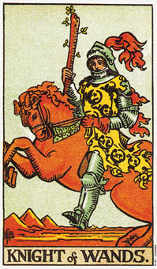

权杖(骑士)意味旅行或改变。
权杖骑士所代表的是火当中的火元素。这张牌可以象征行动、旅行、改变以及为了自身缘故的活动。瞄一眼这张牌就会得到火、活动、热情及活力的印象。
权杖骑士和“节制”牌一样是射手座的，许多射手座的特质都表现在这张牌上，包括需要挑战、爱好旅游和学习，并有教学的能力。这两张牌在事业的分析上也都暗示以教书为业，或是研究和学习。
看得出来权杖骑士正在思考未来的行动，骑士正全神贯注于对向往目标的积极追求。这张牌经常代表一种态度――完成某件事情唯一的办法就是自己动手做。
这张牌所描绘的男人(偶尔也画成女人)有着火热的天性，蓝或灰的眼珠，和红棕色的头发。然而这种长相只有高加索人符合，所以它以及是描述一个人的天性，而不是他的长相。为人坦率、积极以及行动立强，而且年龄通常介于二十一到三十之间。
有时候骑士也可以指比这个年纪还要大的人，不过是个不成熟的人。这个人还不具备权杖国王所拥有的理解力。也就是说，他还不了解，旅程才是火的主要课题，而不是个目标。这课题通常要一直到许多的目标已经被达成，许多目的已经实现，而渴望依然存在，才会被了解。
这包含于优先顺序的理论中：“真正的目的方向通常和目标成直角，而要达成目标必先对真正的目的有所理解。”举例而言，蜜蜂在繁花间采集蜂蜜，那是它的目标，但真正的目的是授粉。
骑士的旅行大衣上有很多火精灵(火元素的象征)。他们的尾巴没碰到嘴巴，在国王身上则有，着暗示尚未完成的行动和为成型的计划。
大体上的意义
权杖骑士意指改变、旅行和行动。在有关家庭环境的问题上，它暗示搬家住新房子。在工作的分析上，骑士表示一趟和事业有关的旅行，或者是换了一个新工作。它是一张代表旅行的牌，特别是和王牌、权杖三或者权杖八一起出现时。
两性关系上的意义
在两性关系的分析上，权杖骑士代表意味积极、热情的年轻人，有勇往直前的态度和喜爱征服一切的个性。他喜欢的是坦诚而非圆滑，所以他的沟通方式是直截了当的。
有时候骑士也可以形容一段在旅游途中所形成的两性关系。
倒立的权杖骑士
倒立的权杖骑士需要持续的冲突来分散他的精力，否则他可能就会变得在肉体或情绪上都不灵活了。
他一直在找寻但是一无所获，因为他不断的移动，而且未经深思的行动通常是没有长进的，他总是在匆匆忙忙的行动中重复错误。这该市让他的思考赶上行动的时候了，这样才可能带给他成长。
从一般的角度来看，骑士的倒立意味延迟、计划中断及不协调。遭遇对立的状态时就失去耐心，也是这张倒立牌的意味。
倒立的骑士觉得自己很难把那些已经着手的事情给完成，他需要回归成正立的骑士，在行动之前好好的做计划。
在两性关系的分析中，倒立的骑士说明一个人对某段关系，不愿意做出任何实际的承诺，因为他并不成熟。通常他相信“比较多就是比较好。”我用一位当事人来示范这种态度。他说：“为什么要死守住一个女人，外面不时有一大堆女人正等着你吗?”